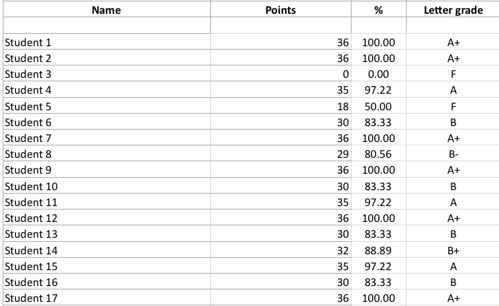
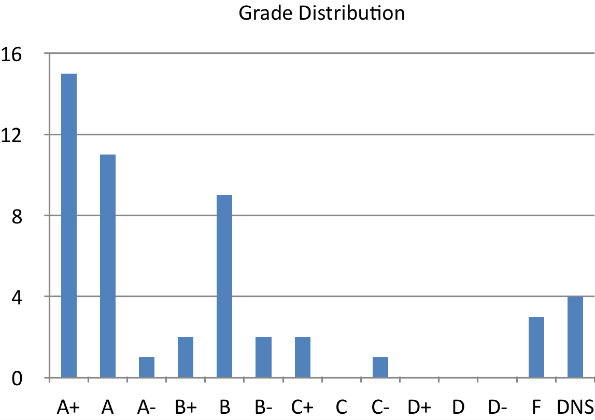

Resources
For a large portion of my time at Rice University, I was a teaching assistant for the ASTR 201 class. During this, I developed a grading spreadsheet that automatically calculates the percentage and letter grade for assignments based on a point system (e.g. 50 out of 50 points) and displays the letter grade distribtion of your class.
SpreadSheet Visuals


Example grades and distribution
While many online grading and class management websites have taken over school systems, it is still sometimes easier to use a spreadsheet or necessary to view the grade distribution. I have made this spreadsheet available for download.
Automatic Grading Sheet (Apple Numbers)
Automatic Grading Sheet (MS Excel) [Untested]
To use this, simply enter the amount of points each students earned in the "Points" section. You can also change the number of total points by changing the "Points out of" cell. Feel free to rename the student section for your own class. The spreadsheet shows 50 students, but you can drag the cells down to fit your class size. Note that DNS stands for 'Did Not Submit' and is displayed when a grade section is left blank.